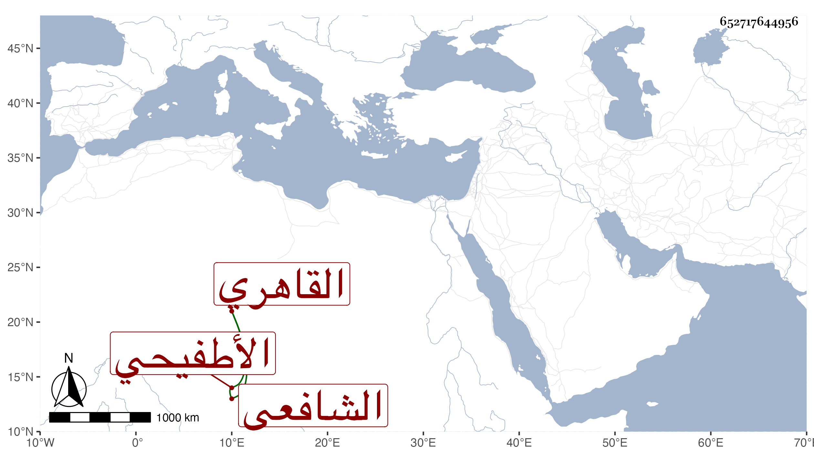

0902Sakhawi.DawLamic.ITO20230111-ara1.EIS1600.652717644956
Biography ID: 652717644956
254
محمد بن أحمد بن يعقوب بن أحمد بن عبد المنعم بن أحمد المحب بن الشهاب الأطفيحي الأصل القاهري الشافعي سبط الزين العراقي الماضي أبوه وشقيقاه عبد الرحيم وعبد القادر . ولد قبل سنة عشرين وثمانمائة ونشأ في كنف أبويه فحفظ القرآن وغيره وعرض على جماعة وسمع أو أحضر على خاله الولي ابن العراقي وكذا على ابن الجزري ختم مسند الشافعي وشيخنا وآخرين ، وأجاز له في سنة ست وعشرين باستدعاء الكلوتاتي التاج محمد والعلاء على ابنا ابن بردس والنور ابن سلامة والخطيب أبو الفضل محمد بن أحمد بن ظهيرة والنجم بن حجي وعبد الرحيم بن أحمد بن المحب والشمس الكفيري والشهاب بن ناظر الصاحبة وعائشة ابنة ابن الشرائحي في آخرين وحج غير مرة واشتغل بالمباشرة فمهر فيها خصوصا في أوقاف الحرمين وعول عليه القضاة سيما السفطي وصار هو المرجوع إليه مع جودة الخط والظرف النسبي وكثرة الأدب والتواضع ولين الكلمة والاحتمال ومزيد الكرم والتودد ولكنه كان منهمكا في لذاته بحيث كان ذلك سببا لانخفاضه وتناقصه شيئا فشيئا وكاد أن يكف بعد أن كان أعور إلى أن مات وقد زاحم السبعين في ليلة الخميس ثالث عشر جمادى الأولى سنة ثمان وثمانين وصلى عليه من الغد بمصلى باب النصر ولم يخلف بعده في براعته مثله ، وما أحسن قوله عن القاضي زكريا أنه طبع على الحرمان ، وقد أخذ عنه بآخرة بعض الطلبة وكتب على الاستدعاءات عفا الله عنه .
